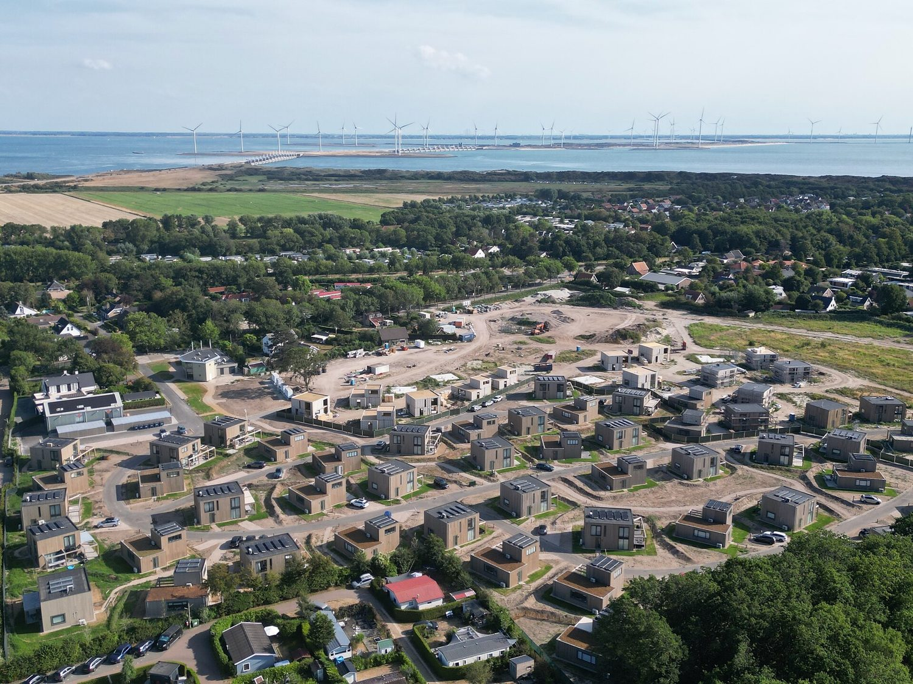

A shorter file review
Reviewer minutes per parcel fileInclude opening cited pages and preparing the professional follow-up.
For property developers and land acquisition teams. Plotmark reads title papers, survey plans and planning documents, then lists missing evidence and conflicting parcel details with page references.
 LAND CONTEXT / LICENSED AERIAL PHOTOGRAPHY
LAND CONTEXT / LICENSED AERIAL PHOTOGRAPHYSurvey schedule: 8.4 ha
Title schedule: 7.9 ha

The prepared AI brief places both passages beside a 0.5-hectare discrepancy for professional review.
The Azure document-reading path
A title schedule, survey plan and planning document can disagree about the same parcel. Finding the conflict is time-consuming when the evidence spans many pages and versions.
Read the operating problemAI compares land documents and survey references before an acquisition review. Choose a sample case and inspect the evidence behind the finding.
Parcel reference PM-501. The survey schedule gives an area of 8.4 hectares. Access is shown along the eastern boundary.
Evidence is prepared for this demonstration. Use the source reference to check the finding.See how the source becomes a specific question, a cited observation and a next action.
Enter the area on each supplied schedule. The comparison identifies a discrepancy for professional review; it does not determine title or boundaries.
Agree the baseline and review the result with the person responsible for the work.
Include opening cited pages and preparing the professional follow-up.
Check parcel references, page numbers, versions and the exact quoted passages.
Compare the generated questions with an authorized professional review.
Compare two time assumptions for parcel files. The estimate is calculated from your entries; it is not a measured customer result.
The initial strategy follows the teams already responsible for this review.
Compare document references and keep the unresolved questions in one brief.
Assign an evidence request with the relevant page and source version.
Read the cited passages and record the professional conclusion.
The review interface and source-linked reports are implemented. The model connection and sector data rollout have explicit milestones.
All development stagesChoose a case, inspect the sources and retain a reviewed report.
Assign review states, record observations and export the work.
Server-side credentials and a deployed compatible model are required for connected analysis.
Connect document upload, page extraction and parcel-reference indexing; validate quotation and version handling.
Acquisition review stays central to the workflow. The project’s software and documentation have a named maintainer.
Team and responsibilitiesMaintains the published product source, working review interfaces and implementation documentation for Uniqkode.
Public project profileIt prepares a due-diligence brief. It does not confirm ownership, verify a registry entry or replace a lawyer or licensed surveyor.